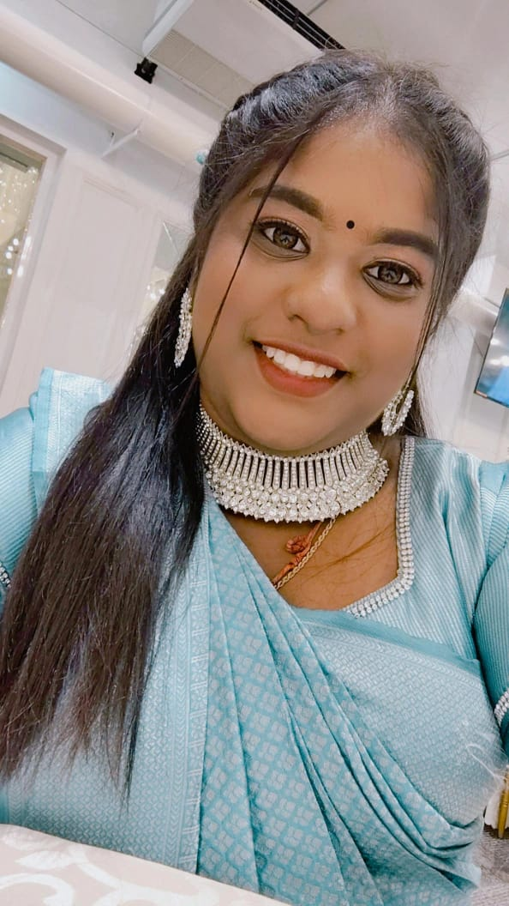

06 / ABOUT ME
The student

ABOUT ME
Divyaasni A/P Muralitaran
"Every challenge is an opportunity to learn, create, and become better."
Name
Divyaasni A/P Muralitaran
Matric Number
251570002
Programme
Bachelor of Interactive Media Technology
University
Universiti Malaysia Perlis (UniMAP)
Case Study
MAMEE-Double Decker
Course
Creativity & Innovation
REFERENCES USED
Evidence behind the case study.
MAMEE — About Us / HistoryFounder, 1971 origin, Lucky noodles, MAMEE snack, Double Decker, Mister Potato and Mamee Chef.
Open source ↗
Open source ↗
MAMEE — Story of Malaysia's famed Mamee Monster NoodlesLucky's lukewarm response, observation of uncooked-noodle consumption, Mamee Monster, market research and Monster Lab.
Open source ↗
Open source ↗
MAMEE — Pierre Pang on the company's recipe to successEarly instant-noodle challenge, the Mamee Monster opportunity and later growth stagnation.
Open source ↗
Open source ↗
MIDA — Mamee stands strong after 5 decadesRevenue growth, international expansion, healthier products, partnerships and supply-chain strategy.
Open source ↗
Open source ↗
MIDA — RM150 million production technology investment2024 announced investment in a new production facility using automatic production technology.
Open source ↗
Open source ↗
MAMEE Official YouTubeUseful for the required video/media component of the e-Portfolio.
Open channel ↗
Open channel ↗
REFLECTION
What I learned from MAMEE.
The main lesson from the case is that innovation does not always begin with advanced technology. It can begin with careful observation. MAMEE's early transformation shows how an unexpected consumer behaviour can become a new product idea. Later examples show that innovation can also involve research, partnerships, new market strategies and production technology.